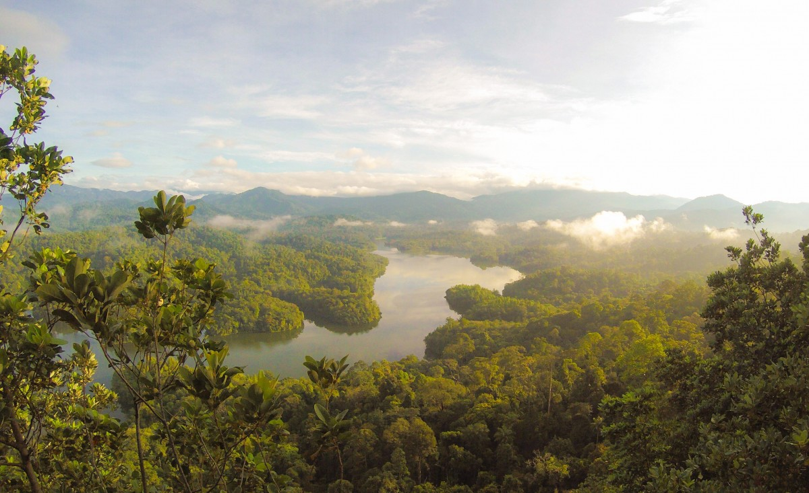

Objectif 15 : Vie terrestre
L’Objectif de Développement Durable n°15 vise à préserver, restaurer et exploiter durablement les écosystèmes terrestres. Cela inclut la gestion durable des forêts, la lutte contre la désertification, la restauration des sols dégradés et la protection de la biodiversité.
Sans biodiversité, il n’y a pas d’équilibre naturel. Les forêts, les sols, les insectes pollinisateurs, les animaux et les plantes sont tous liés dans une immense toile de vie.
La biodiversité est indispensable à notre survie. Elle nous fournit de l'air pur, de l'eau potable, des aliments, des médicaments et régule le climat. Pourtant, chaque année, des millions d’hectares de forêts disparaissent et des centaines d’espèces s’éteignent.
Découvrez les différentes facettes de l’ODD 15, les menaces qui pèsent sur la biodiversité, les solutions concrètes à mettre en place, et testez vos connaissances grâce à notre quiz :
Voici quelques-unes des cibles définies par l’ONU pour cet objectif :
« Si vous pensez que la nature est inutile, attendez qu’elle vous facture ses services. » — Anonyme